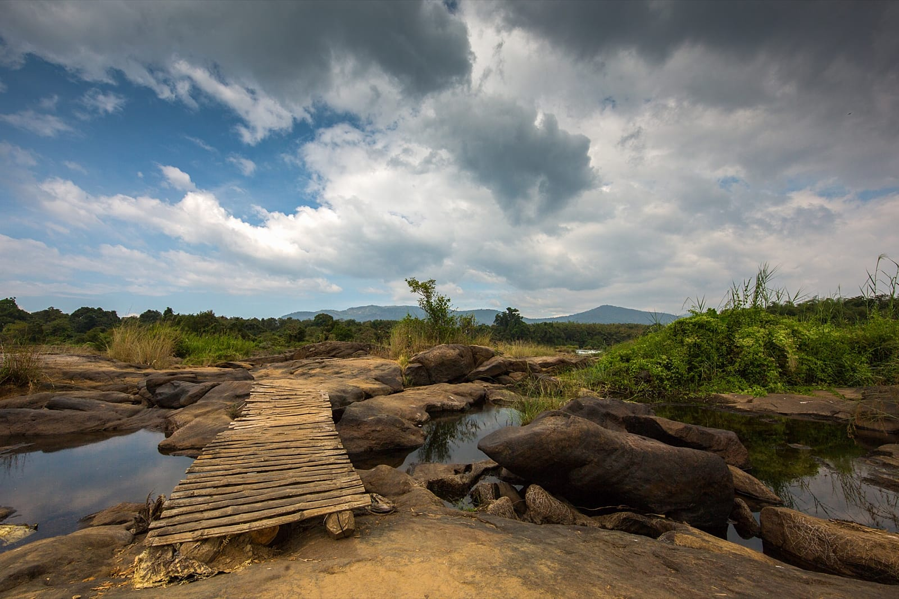
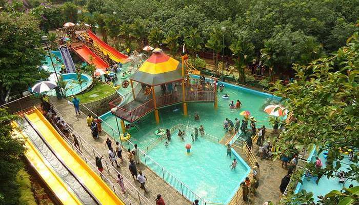
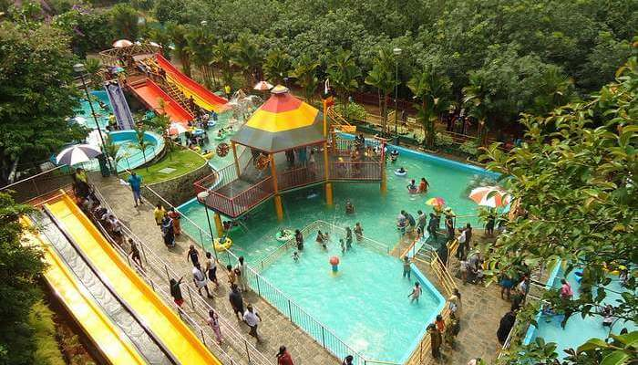
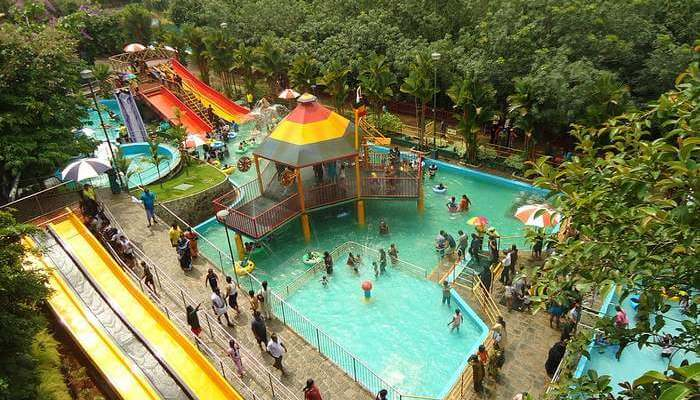

TOP DESTINATIONS
 



Ernakulam is a district of Kerala, India. Situated in the central part of that state. Spanning an area of about 2,407 km2, Ernakulam district is home to over 12% of Kerala’s population. Its headquarters is located at Kakkanad. Ernakulam district includes Kochi city, which is known as the commercial capital of Kerala. The district is famous for its ancient temples, churches, and mosques. The district includes the largest metropolitan region of the state, Greater Cochin. Ernakulam district is the highest revenue yielding district and the district with most number of industries in the state, and hence called the financial, industrial and commercial capital of Kerala. All these factors make Ernakulam district to contribute around 60% of the annual state revenue. It is the third most populous district in Kerala, after Malappuram and Thiruvananthapuram (out of 14).[3]. Ernakulam district also hosts the highest number of international and domestic tourists in Kerala state. The language spoken in Ernakulam is Malayalam which is the mother-tongue of Kerala. English is widely used, mostly in business circles. Ernakulam became India's first district having 100 percent banking or full 'meaningful financial inclusion' in 2012.[4][5] Ernakulam has a very high HDI of 0.801 (UNHDP report 2005) which is among the highest in India [6]
